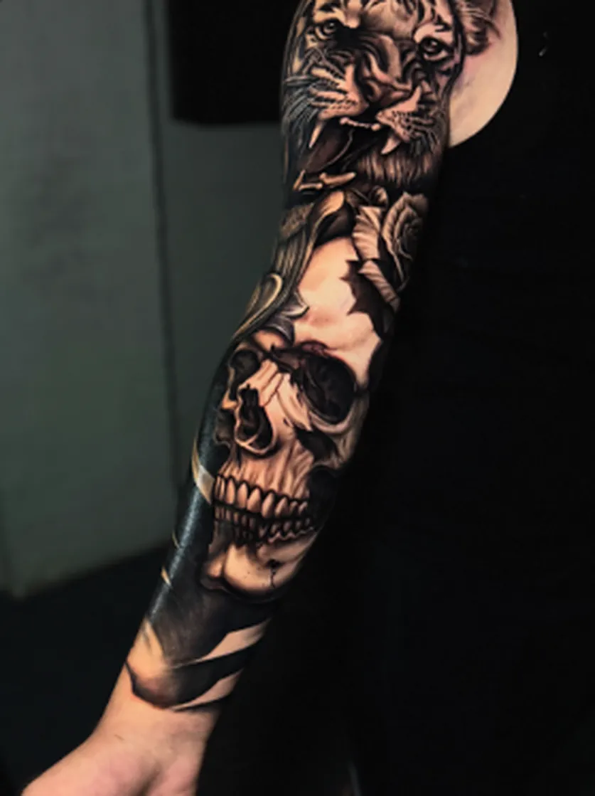
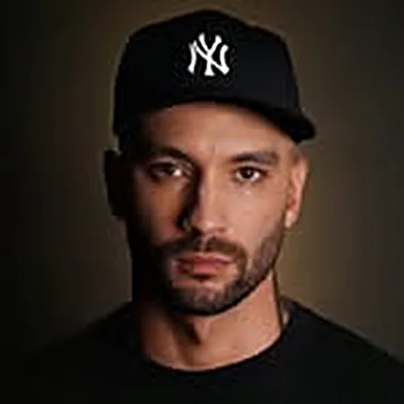

Realism Tattoo ArtistCarlosBrito
- Estilo
- Black&Grey Realism
- Projetos
- Custom Large Scale
- Onde
- Portugal| Denmark
Marcações abertas · Bookings open
Onde queres tatuar?
Toca nas zonas do corpo. A mensagem fica pronta: é só copiar e abrir o WhatsApp para a colares. Não guardamos nada.
Vista
Atalhos
Onde estás?
A tua mensagem
Copiar mensagem e abrir WhatsApp
O link de WhatsApp do Carlos não aceita texto preparado, por isso a mensagem copia-se e basta colá-la.
Realismo a preto e cinza
Peças de grande escala. Toca numa para a ver maior.
Leão e caveira01 Rosto e olho02 Rosto e máscara03 Palhaço no ombro04